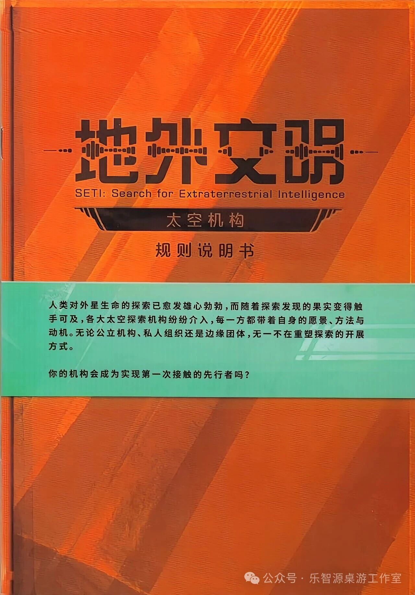
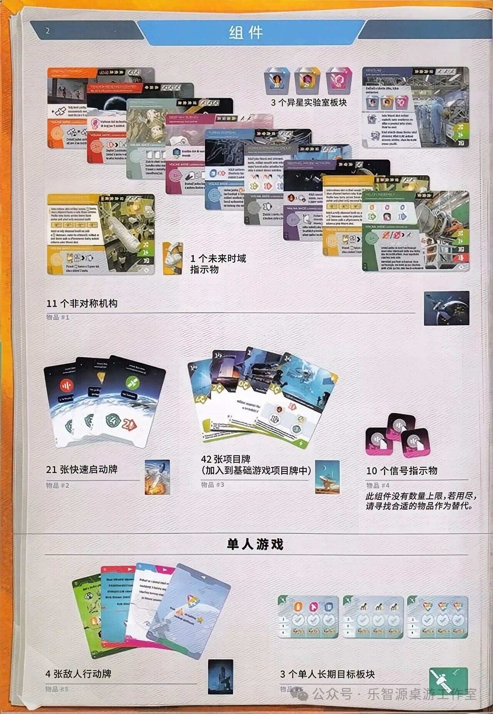
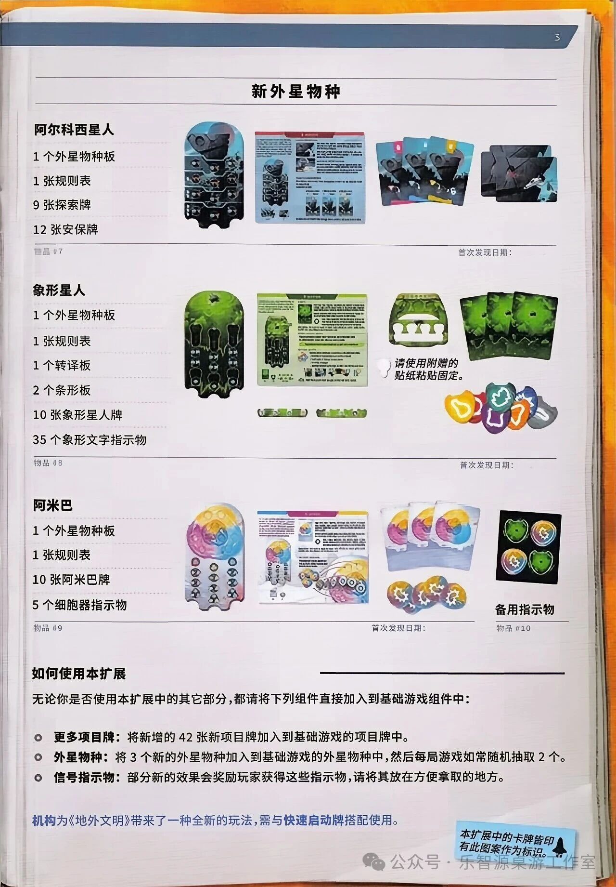
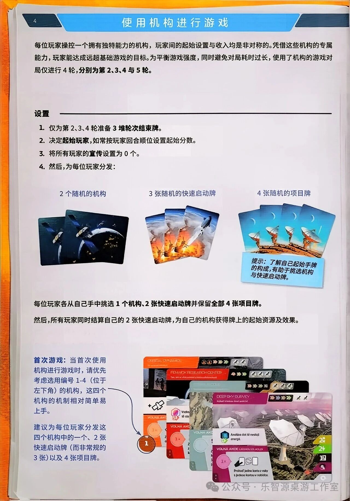
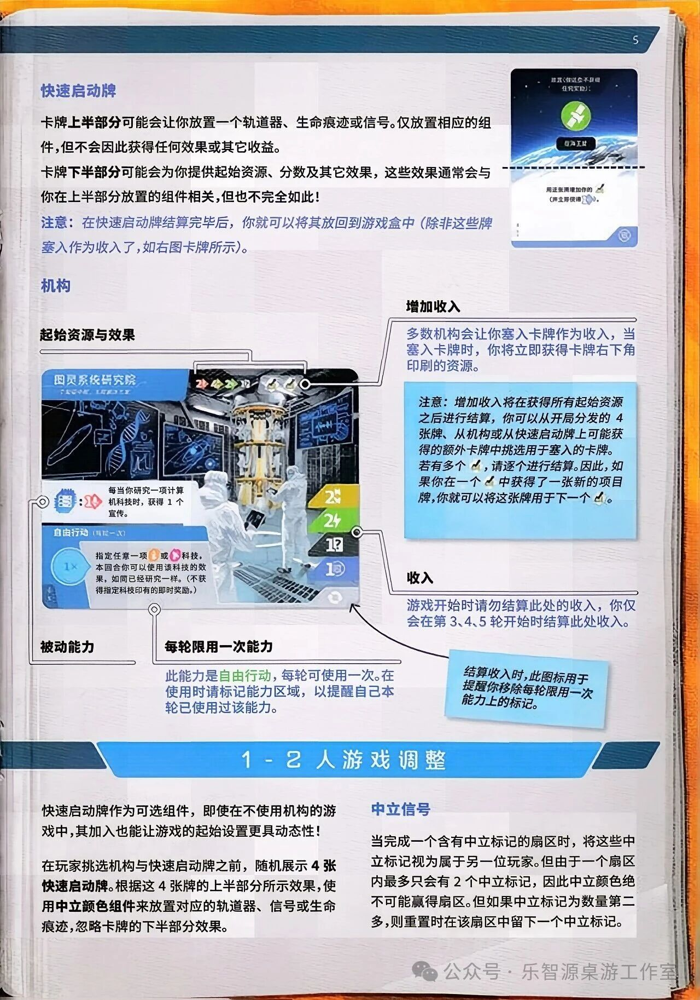
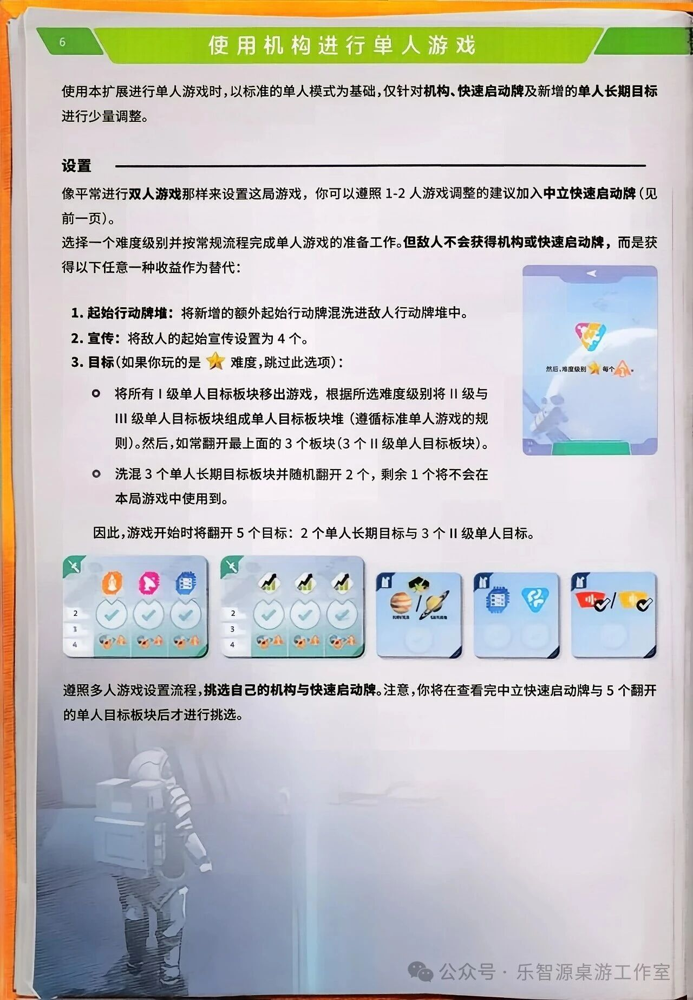
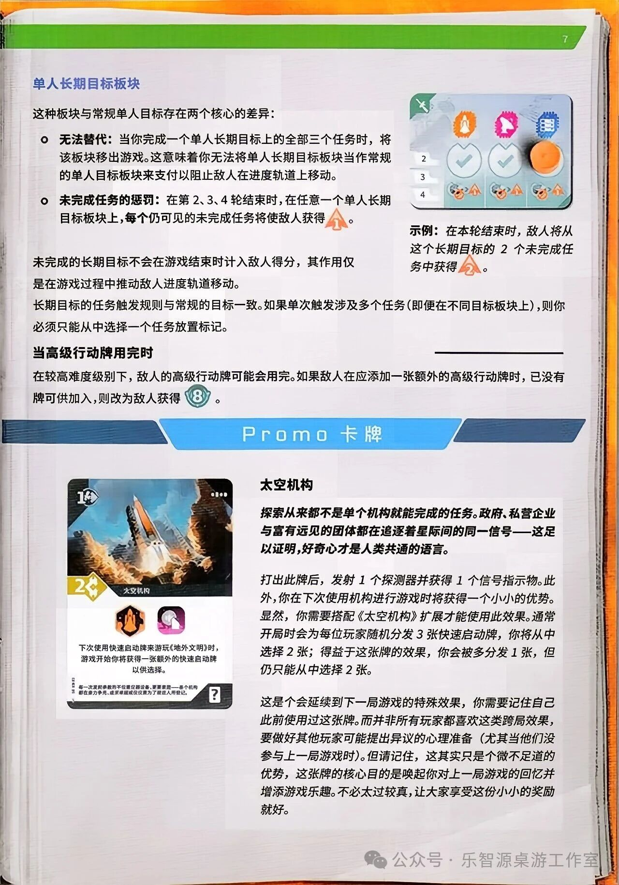
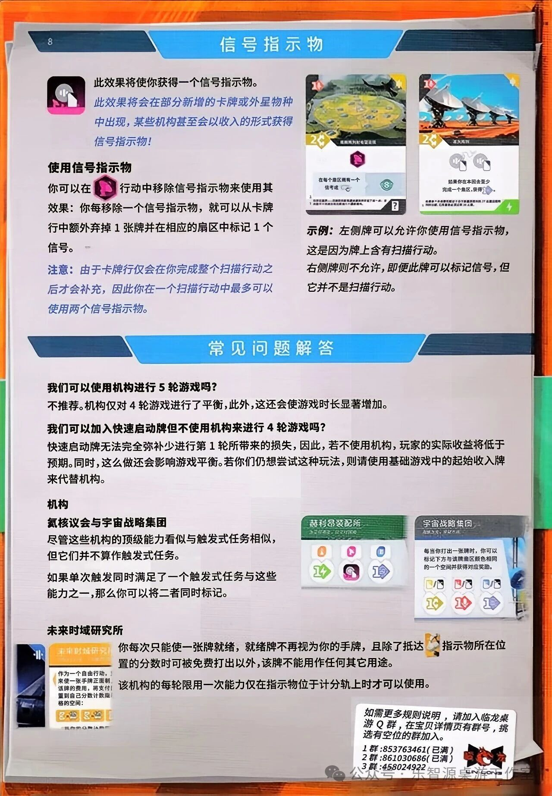

🚀 地外文明：太空机构
SETI: Space Agencies · 《地外文明》扩展 · 设计：Tomáš Holek · CGE 出版 · 1–4 人（官方中文版规则书全文转录，需配合基础游戏）

本页整理自微信公众号「乐智源桌游工作室」星空循迹 太空机构[SETI Space Agencies]一文发布的《地外文明：太空机构》(SETI: Space Agencies，《地外文明》，即站内《SETI：寻找外星人》同款游戏的官方中文版，Tomáš Holek 设计，CGE 出版) 官方中文规则书扫描件。扩展全书 8 页（封面 + 印页 2–8）逐页全文转录（封面、组件、新外星物种、使用机构进行游戏、快速启动牌/机构卡面解剖与 1-2 人游戏调整、使用机构进行单人游戏、单人长期目标与 Promo 卡牌、信号指示物与常见问题解答），原书扫描图随文嵌入——点击任意图片即可放大查看。规则内容归 CGE 及版权方所有，转录仅供个人学习查阅。
整理说明：〔图标：……〕表示此处为印刷图标/图形，非文字；〔图 …〕说明为整理所拟。组件清单已逐项核对加和——P.2 扩展组件+单人组件明示数量合计 95 件，P.3 三个新外星物种明示数量合计 90 件（阿尔科西星人 23 + 象形星人 50 + 阿米巴 17），全书明示数量合计 185 件。扫描件模糊处（示例卡卡名、卡面风味小字等）均如实标〔?〕并说明，未作推测补全；P.2「3 个单人长期目标板块」的物品编号 #6 被公众号水印遮压，据本页物品编号连续递推补定。P.2/P.8 页底便签（扩展卡牌标识提示、临龙桌游 Q 群信息）与全页「公众号·乐智源桌游工作室」水印为扫描件所含叠加内容，非规则书正文，照录备考。原书章节横幅「1 - 2 人游戏调整」「Promo 卡 牌」等字间空格照录。
地外文明
SETI: Search for Extraterrestrial Intelligence
太空机构
规则说明书
封面简介（青绿色横幅文字）
人类对外星生命的探索已愈发雄心勃勃，而随着探索发现的果实变得触手可及，各大太空探索机构纷纷介入，每一方都带着自身的愿景、方法与动机。无论公立机构、私人组织还是边缘团体，无一不在重塑探索的开展方式。
你的机构会成为实现第一次接触的先行者吗？
〔图:封面为橙色放射状斜条纹背景，左缘可见书脊装订阴影；上半部居中为深棕色装饰大字「地外文明」（字间穿插点状声波/无线电信号装饰线与短横线），其下一行英文「SETI: Search for Extraterrestrial Intelligence」；再下为深棕色绶带横幅，内印「太空机构」四字（两侧饰以翼状纹样）；绶带下方印「规则说明书」五字；页面中部横贯一条青绿色横幅（腰封式），印两段封面简介文字；扫描件右下角有「公众号·乐智源桌游工作室」半透明水印，为转载所加，非书内容。〕

扩展组件
- 3 个异星实验室板块
- 1 个未来时域指示物
- 11 个非对称机构（物品 #1）
- 21 张快速启动牌（物品 #2）
- 42 张项目牌（加入到基础游戏项目牌中）（物品 #3）
- 10 个信号指示物（物品 #4）
蓝色斜体框文字（置于「10 个信号指示物」标签之下）：「此组件没有数量上限。若用尽，请寻找合适的物品作为替代。」
单人游戏
- 4 张敌人行动牌（物品 #5）
- 3 个单人长期目标板块（物品 #6）
〔图:页首通栏标题横幅，深浅两色蓝色标签，中央为章节名「组 件」，左端小标签印页码「2」。〕
〔图:左上为一叠扇形排开的新增项目牌照片（多彩牌面）；其右为三块六边形异星实验室板块照片（蓝、黄、粉三色，板块上印人物与图案），下方标签「3 个异星实验室板块」；最右为一张竖放的大幅异星实验室卡牌照片（灰蓝色调，印实验室内部照片与三块板块缩略图及说明文字）。〕
〔图:中部偏左为一枚黄橙色小人形指示物照片（头戴式造型），下方标签「1 个未来时域指示物」；其右为一叠扇形排开的机构卡照片（深色牌背，牌面为深蓝/黑底卫星与天线图案）；右缘一枚深色轨道卫星实物照片（无标签）。〕
〔图:左下为一叠扇形排开的快速启动牌照片（蓝天地球图案牌背），标签「21 张快速启动牌／物品 #2」；中为一叠扇形排开的项目牌照片（蓝色地球图案），标签「42 张项目牌（加入到基础游戏项目牌中）／物品 #3」；右为一堆粉黑配色信号指示物照片（六边形/圆角方形混排），标签「10 个信号指示物／物品 #4」，其下蓝色斜体框印「此组件没有数量上限。若用尽，请寻找合适的物品作为替代。」〕
〔图:页面下部为「单 人 游 戏」加粗小标题；其下左为一叠彩色敌人行动牌照片，标签「4 张敌人行动牌／物品 #5」，牌旁一枚深色火箭发射井实物照片；右为三块浅蓝底单人长期目标板块照片（板块上印彩色图标与勾选槽），标签「3 个单人长期目标板块／物品 #6」，右缘一枚绿色卫星板条实物照片。〕

新外星物种
阿尔科西星人
- 1 个外星物种板
- 1 张规则表
- 9 张探索牌
- 12 张安保牌
物品 #7
象形星人
- 1 个外星物种板
- 1 张规则表
- 1 个转译板
- 2 个条形板
- 10 张象形星人牌
- 35 个象形文字指示物
物品 #8
图旁标注文字：「请使用附赠的贴纸粘贴固定。」
阿米巴
- 1 个外星物种板
- 1 张规则表
- 10 张阿米巴牌
- 5 个细胞器指示物
物品 #9
备用指示物
物品 #10
如何使用本扩展
无论你是否使用本扩展中的其它部分，都请将下列组件直接加入到基础游戏组件中：
- 更多项目牌： 将新增的 42 张新项目牌加入到基础游戏的项目牌中。
- 外星物种： 将 3 个新的外星物种加入到基础游戏的外星物种中，然后每局游戏如常随机抽取 2 个。
- 信号指示物： 部分新的效果会奖励玩家获得这些指示物，请将其放在方便拿取的地方。
机构为《地外文明》带来了一种全新的玩法，需与快速启动牌搭配使用。
便签（蓝色，随纸张略倾斜）：「本扩展中的卡牌皆印有此图案作为标识。」〔旁附黑色火箭剪影图案〕
〔图:页首通栏大标题「新外星物种」，上下衬细横线。〕
〔图:阿尔科西星人组——左为深灰蓝色异形外星物种板照片（板上印多格凹槽与圆形指示物槽位）；中为一张规则表照片（红蓝配色，印物种板缩略图、多段文字与三张卡牌缩略图）；右为一叠扇形排开的探索牌照片（青蓝色牌面，顶部印彩色扇形标记），旁为一叠深灰蓝色安保牌照片。各物种板右上角均印有「首次发现日期：」字样（供游戏时填写）。标签行「物品 #7」居左，「首次发现日期：」居右。〕
〔图:象形星人组——左为绿色异形外星物种板照片（板上印竖向凹槽与圆形槽位）；中为一张规则表照片（绿色配色，印物种板缩略图与多段文字）；其右为转译板照片（绿色拱形板，下缘三个白色半圆凸起），旁注「请使用附赠的贴纸粘贴固定。」；再右为一叠扇形排开的象形星人牌照片（深绿色牌面）；下方两枚绿色长条形条形板照片；右下为一堆彩色象形文字指示物照片（黄、红、青、紫、橙、灰等多色异形圆片，各印白色象形符号）。标签行「物品 #8」居左，「首次发现日期：」居右。〕
〔图:阿米巴组——左为异形外星物种板照片（上半部为黄/粉/蓝三色圆形区块，下半部灰色板上印多格槽位）；中为一张规则表照片（粉/蓝/黄配色，印物种板缩略图与多段文字及连接线示意）；右为一叠扇形排开的阿米巴牌照片（白底，印三色阿米巴图案），下方一堆细胞器指示物照片（黄/粉/蓝三色齿轮状圆片）；最右为一张黑色备用指示物板照片（印四枚彩色备用图标）。标签行「物品 #9」居左、「首次发现日期：」居右，「备用指示物／物品 #10」居右下。〕
〔图:页面下部为「如何使用本扩展」加粗小标题（右侧衬粗横线）、三行圆点列表与蓝色正文行；右下角为斜贴的蓝色便签，印「本扩展中的卡牌皆印有此图案作为标识。」并附黑色火箭剪影图案。〕

使用机构进行游戏
每位玩家操控一个拥有独特能力的机构，玩家间的起始设置与收入均是非对称的。凭借这些机构的专属能力，玩家能达成远超基础游戏的目标。为平衡游戏强度，同时避免对局耗时过长，使用了机构的游戏对局仅进行 4 轮，分别为第 2、3、4 与 5 轮。
设置
- 仅为第 2、3、4 轮准备 3 堆轮次结束牌。
- 决定起始玩家，如常按玩家回合顺位设置起始分数。
- 将所有玩家的宣传设置为 0 个。
- 然后，为每位玩家分发：
〔图:三组分发照片并排，上方标签自左至右为「2 个随机的机构」（深色卫星图案卡）、「3 张随机的快速启动牌」（发射场景图案卡）、「4 张随机的项目牌」（天线阵列图案卡）；右下斜贴蓝色便签：「提示：了解自己起始手牌的构成，有助于挑选机构与快速启动牌。」〕
每位玩家各从自己手中挑选 1 个机构、2 张快速启动牌并保留全部 4 张项目牌。
然后，所有玩家同时结算自己的 2 张快速启动牌，为自己的机构获得牌上的起始资源及效果。
首次游戏（左侧蓝色注释栏）
首次游戏：当首次使用机构进行游戏时，请优先考虑选用编号 1-4（位于左下角）的机构，这四个机构的机制相对简单易上手。
建议为每位玩家分发这四个机构中的一个、2 张快速启动牌（而非常规的 3 张）以及 4 张项目牌。
〔图:左下角有一枚橙色圆形「1」编号标记，箭头自「首次游戏」注释栏指向该标记。右下为一张机构卡与若干项目牌、快速启动牌堆叠的照片：机构卡为橙红色调，卡名印捷克文装饰字体，卡面印「POND RESEARCH CENTER」等字样与多个彩色徽章；其上叠放多张项目牌（牌面印捷克文与奖杯、望远镜等图标）及「VOLNÁ KAPACITA」字样的快速启动牌；右缘一枚深蓝色「12」「13」数字徽章照片。卡面小字均难以逐字确辨，不转录。〕

快速启动牌
卡牌上半部分可能会让你放置一个轨道器、生命痕迹或信号。仅放置相应的组件，但不会因此获得任何效果或其它收益。
卡牌下半部分可能会为你提供起始资源、分数及其它效果，这些效果通常会与你在上半部分放置的组件相关，但也不完全如此！
注意：在快速启动牌结算完毕后，你就可以将其放回到游戏盒中（除非这些牌塞入作为收入了，如右图卡牌所示）。
〔图:右侧为一张快速启动牌样例照片（竖放，上半部为深蓝星空与地球弧面图案，中央一枚绿色圆形卫星图标，其下黑色小标签印字；中部一条黑色虚线分隔上下半部；下半部白底，印小字两行与一个蓝白色图标，右下角蓝色圆角标记）。卡面文字字号极小且扫描模糊：上半部黑色小标签近似「自动卫星」〔?〕；下半部首行近似「用这张牌增加你的」〔?〕，其余难以逐字确辨，均不转录。〕
机构
〔图:本节为一张放大的机构卡样例照片，四周以白线引出多个标注框；卡面自上而下为：蓝色卡名横幅（装饰字体，近似「囚灵系统研究院」〔?〕，其下一行小字难以辨读）、卡名右侧横排数枚彩色小徽章（红、黄绿、绿底数字徽章与黄绿色卫星状、钥匙状小图标，具体图形难以确辨）、中部实验室内部照片（蓝色调，印全息屏幕与宇航员）、照片左下叠放白色圆角文本框两段、卡右缘纵向排列资源徽章列（黄底「2」+宣传图标、绿底「2」+能量图标、深灰底「1」+白色小图标、蓝底「1」+圆形小图标、灰底收入图标）、左下蓝色「1x」圆形标记区。卡面印刷文字转录如下。〕
示例卡牌文字
〔被动能力行〕〔图标:蓝色芯片状〕：〔图标:粉色缎带状〕 每当你研究一项计算机科技时，获得 1 个宣传。
〔自由行动（限用一次）〕指定任意一项〔图标:橙色圆标〕或〔图标:粉色圆标〕科技。本回合你可以使用该科技的效果，如同已经研究一样。（不获得指定科技印有的即时奖励。）
起始资源与效果
〔标注框指向卡名右侧的横排彩色小徽章与右缘徽章列。〕
被动能力
〔标注框指向卡面白色文本框第一段（「每当你研究一项计算机科技时，获得 1 个宣传。」）。〕
每轮限用一次能力
此能力是自由行动，每轮可使用一次。在使用时请标记能力区域，以提醒自己本轮已使用过该能力。
〔标注框指向卡面白色文本框第二段与左下「1x」圆形标记区。〕
增加收入
多数机构会让你塞入卡牌作为收入，当塞入卡牌时，你将立即获得卡牌右下角印刷的资源。
注意（蓝色文本框）：增加收入将在获得所有起始资源之后进行结算，你可以从开局分发的 4 张牌、从机构或从快速启动牌上可能获得的额外卡牌中挑选用于塞入的卡牌。若有多个〔图标:塞入卡牌状〕，请逐个进行结算。因此，如果你在一个〔图标:塞入卡牌状〕中获得了一张新的项目牌，你就可以将这张牌用于下一个〔图标:塞入卡牌状〕。
收入
游戏开始时请勿结算此处的收入，你仅会在第 3、4、5 轮开始时结算此处收入。
〔标注框指向卡右缘徽章列最下方的灰底收入图标。〕
便签（蓝色，斜贴）：「结算收入时，此图标用于提醒你移除每轮限用一次能力上的标记。」
1-2 人游戏调整
快速启动牌作为可选组件，即使在不使用机构的游戏中，其加入也能让游戏的起始设置更具动态性！
在玩家挑选机构与快速启动牌之前，随机展示 4 张快速启动牌。根据这 4 张牌的上半部分所示效果，使用中立颜色组件来放置对应的轨道器、信号或生命痕迹，忽略卡牌的下半部分效果。
中立信号
当完成一个含有中立标记的扇区时，将这些中立标记视为属于另一位玩家。但由于一个扇区内最多只会有 2 个中立标记，因此中立颜色绝不可能赢得扇区。但如果中立标记为数量第二多，则重置时在该扇区中留下一个中立标记。

使用机构进行单人游戏
使用本扩展进行单人游戏时，以标准的单人模式为基础，仅针对机构、快速启动牌及新增的单人长期目标进行少量调整。
设置
像平常进行双人游戏那样来设置这局游戏，你可以遵照 1-2 人游戏调整的建议加入中立快速启动牌（见前一页）。
选择一个难度级别并按常规流程完成单人游戏的准备工作。但敌人不会获得机构或快速启动牌，而是获得以下任意一种收益作为替代：
- 起始行动牌堆： 将新增的额外起始行动牌混洗进敌人行动牌堆中。
- 宣传： 将敌人的起始宣传设置为 4 个。
- 目标（如果你玩的是〔图标:金色星形难度徽章〕难度，跳过此选项）：
- 将所有Ⅰ级单人目标板块移出游戏，根据所选难度级别将Ⅱ级与Ⅲ级单人目标板块组成单人目标板块堆栈（遵循标准单人游戏的规则）。然后，如常翻开最上面的 3 个板块（3 个Ⅱ级单人目标板块）。
- 洗混 3 个单人长期目标板块并随机翻开 2 个，剩余 1 个将不会在本局游戏中使用到。
因此，游戏开始时将翻开 5 个目标：2 个单人长期目标与 3 个Ⅱ级单人目标。
〔图:中部为五张单人目标板块照片并排：左二为浅绿底Ⅱ级单人目标板块（板块左上角绿色「X」角标，印橙色/粉色/蓝色图标与勾选圆槽，左缘印 2、3、4 级数字）；右三为Ⅲ级单人长期目标板块（左上角蓝色「II」角标，分别印土星与土卫图案、数据芯片与生命痕迹图案、红色信号与黄色徽章图案及斜置勾选标记）。〕
〔图:右侧为一张单人目标板块背面卡照（浅紫蓝底，顶部紫色横条印白色左向箭头，中央彩色三角形徽章，其下印小字一行「然后，难度级别〔图标:金色星形〕每个〔图标:橙色上箭头〕。」，底部绿色横条，左下角印小字）。〕
遵照多人游戏设置流程，挑选自己的机构与快速启动牌。注意，你将在查看完中立快速启动牌与 5 个翻开的单人目标板块后才进行挑选。
〔图:页面下部为宇航员背影大图（灰白色调，占据下半页），右下角有公众号水印。〕

单人长期目标板块
这种板块与常规单人目标存在两个核心的差异：
- 无法替代： 当你完成一个单人长期目标上的全部三个任务时，将该板块移出游戏。这意味着你无法将单人长期目标板块当作常规的单人目标板块来支付以阻止敌人在进度轨道上移动。
- 未完成任务的惩罚： 在第 2、3、4 轮结束时，在任意一个单人长期目标板块上，每个仍可见的未完成任务将使敌人获得〔图标:橙色上箭头，内印数字 1〕。
未完成的长期目标不会在游戏结束时计入敌人得分，其作用仅是在游戏过程中推动敌人进度轨道移动。
长期目标的任务触发规则与常规的目标一致。如果单次触发涉及多个任务（即便在不同目标板块上），则你必须只能从中选择一个任务放置标记。
〔图:右上为一张单人长期目标板块照片（浅蓝底，左上角绿色「X」角标，上排印橙色火箭、粉色卫星、蓝色芯片三个图标，中排两个勾选圆槽与一枚橙色圆片指示物，左缘印 2、3、4 级数字，下排印灰色卫星与橙色上箭头图标），其下蓝色标注框：「示例：在本轮结束时，敌人将从这个长期目标的 2 个未完成任务中获得〔图标:橙色上箭头，内印数字〕。」〕
当高级行动牌用完时
在较高难度级别下，敌人的高级行动牌可能会用完。如果敌人在应添加一张额外的高级行动牌时，已没有牌可供加入，则改为敌人获得〔图标:绿底白色数字「8」徽章〕。
Promo 卡牌
探索从来都不是单个机构就能完成的任务。政府、私营企业与富有远见的团体都在追逐着星际间的同一信号——这足以证明，好奇心才是人类共通的语言。
打出此牌后，发射 1 个探测器并获得 1 个信号指示物。此外，你在下次使用机构进行游戏时将获得一个小小的优势。显然，你需要搭配《太空机构》扩展才能使用此效果。通常开局时会为每位玩家随机分发 3 张快速启动牌，你将从中选择 2 张；得益于这张牌的效果，你会被多分发 1 张，但仍然只能从中选择 2 张。
这是个会延续到下一局游戏的特殊效果，你需要记住自己此前使用过这张牌。而并非所有玩家都喜欢这类跨局效果，要做好其他玩家可能提出异议的心理准备（尤其当他们没参与上一局游戏时）。但请记住，这其实只是个微不足道的优势，这张牌的核心目的是唤起你对上一局游戏的回忆并增添游戏乐趣。不必太过较真，让大家享受这份小小的奖励就好。
〔图:左侧为 Promo 卡「太空机构」照片：左上角费用徽章「1」+灰白色尖角图标，右上角四枚小圆点；牌面为航天飞机发射场景照片（棕蓝配色）；左下角黄色六边形徽章「2」+宣传图标；深色横条内印卡名「太空机构」（装饰字体）；其下两枚图标：橙色六边形（内为火箭图案）与粉色圆角方形（内为月球与观测站图案）；正文两行：「下次使用快速启动牌来游玩《地外文明》时，游戏开始你将获得一张额外的快速启动牌以供选择。」；卡底风味小字两行，扫描模糊难以逐字确辨，不转录；右下角黑色方框内「?」标记。〕

信号指示物
〔图标:粉色六边形，内为白色信号波形图案〕此效果将使你获得一个信号指示物。
此效果将会在部分新增的卡牌或外星物种中出现，某些机构甚至会以收入的形式获得信号指示物！
使用信号指示物
你可以在〔图标:粉色六边形，扫描行动图标〕行动中移除信号指示物来使用其效果：你每移除一个信号指示物，就可以从卡牌行额外弃掉 1 张牌并在相应的扇区中标记 1 个信号。
注意：由于卡牌行仅会在你完成整个扫描行动之后才会补充，因此你在一个扫描行动中最多可以使用两个信号指示物。
〔图:右侧为两张项目牌样例照片：左牌为黄绿色调陨石坑地貌图案，左上角红色图标、右上角黄色图标，费用徽章「2」+宣传图标，深色横条内印卡名（装饰字体，模糊难辨），牌面中央一枚粉色六边形图标，其下浅蓝色文本框印小字（近似「在每个扇区里有一个信号……」〔?〕，模糊难辨），卡底两行风味小字模糊难辨，右下角「?」标记；右牌为橙红色调天线阵列图案，费用徽章「2」+宣传图标，深色横条内印卡名（模糊，近似「深空阵列」〔?〕），牌面中央两枚灰色卫星图标，其下印小字两行（首行近似「如果你在本回合至少完成一个扇区，获得〔图标:蓝白色图标〕。」〔?〕，模糊难辨），右下角绿色闪电角标。〕
示例：左侧牌可以允许你使用信号指示物，这是因为牌上含有扫描行动。
右侧牌则不允许，即便此牌可以标记信号，但它并不是扫描行动。
常见问题解答
我们可以使用机构进行 5 轮游戏吗？
不推荐。机构仅对 4 轮游戏进行了平衡，此外，这还会使游戏时长显著增加。
我们可以加入快速启动牌但不使用机构来进行 4 轮游戏吗？
快速启动牌无法完全弥补少进行第 1 轮所带来的损失，因此，若不使用机构，玩家的实际收益将低于预期。同时，这么做还会影响游戏平衡。若你们仍想尝试这种玩法，则请使用基础游戏中的起始收入牌来代替机构。
机构
氦核议会与宇宙战略集团
尽管这些机构的顶级能力看似与触发式任务相似，但它们并不算作触发式任务。
如果单次触发同时满足了一个触发式任务与这些能力之一，那么你可以将二者同时标记。
〔图:右侧为两张机构卡照片：左为绿色调机构卡（卡名装饰字体近似「氦核议会」，卡面印彩色资源图标与说明小字，模糊难辨）；右为深蓝色调机构卡「宇宙战略集团」，卡面印说明小字（近似「每当你打出一张牌时，你可以标记下方或两侧扇区版图相同的一个相同并获取对应奖励。」〔?〕，模糊难辨）与两排资源图标。〕
未来时域研究所
你每次只能使一张牌就绪，就绪牌不再视为你的手牌，且除了抵达〔图标:橙色小图形〕指示物所在位置的分数时可被免费打出以外，该牌不能用作任何其它用途。
该机构的每轮限用一次能力仅在指示物位于计分轨上时才可以使用。
〔图:左下为橙色横幅机构卡「未来时域研究所」照片：卡面印说明小字（首行近似「作为一个自由行动，……来使一张手牌正面朝……该牌的费用，再支付……置到自己分数计数轨……格的空间：」〔?〕，模糊难辨），其下橙色费用图标若干，底部另印一行小字。卡左缘露出相邻卡牌一角（深蓝色，印白色声波状图标）。〕
〔图:右下为斜贴的白色便签（销售方所贴，非书内容）：「如需更多规则说明，请加入临龙桌游 Q 群，在宝贝详情页有群号，挑选有空位的群加入。1 群：853763461（已满） 2 群：861030686（已满） 3 群：458024922」，旁附红色龙形标志与「LIN LONG」字样。〕